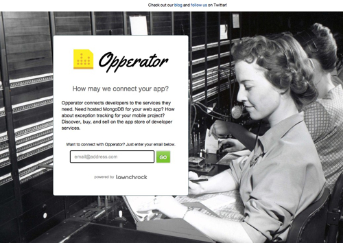
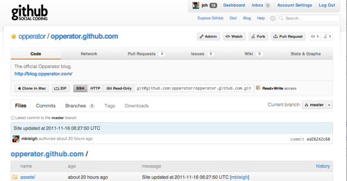
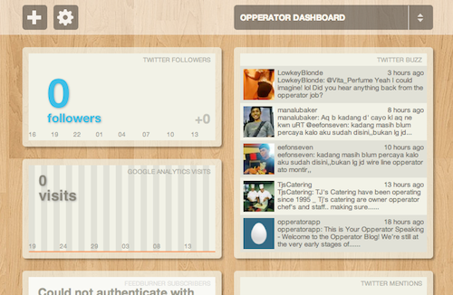

The Scrappy Guide to Pre-Launch Bootstrapping
Vote on HN TweetRepublished from Opperator blog
A lot of startup advice revolves around launching a minimal viable product quickly. You’re happy to put in plenty of sweat and elbow grease for your fledging product, but what about all of your non-core competencies? How will you collect emails from interested users? Or how about keeping your audience engaged on your blog? You want something simple to setup, but with enough functionality to get stuff done. Without further ado, here’s the list of tools we used to get Opperator’s community machine up and running.
LaunchRock
A simple no-frills service for building a landing page to collect contact information from interested users. We chose it for its built-in analytics and simple styling. Protip: the customizable fields allows html, so you can tweak their default form styling.

Tumblr
We signed up for both Posterous and Tumblr, but ultimately went with Tumblr. Being developers, we really wanted something that supports Markdown. We wanted flexibility and features, but at the same time, we didn’t want to get distracted and setup our own blog system. Remember that every hour you spend shaving that hairy blog yak is an hour you could spend on engaging users and refining your product. While Tumblr has its quirks (its UX infuriates me), it’s very easy to style and easy to manage. Extra tip: to add images to your text posts, consider snapping screenshots with Cloud App or Skitch.
Since we’re building a product for developers, being reachable on Twitter is just as or more important than having an email! We’re on Twitter as @opperatorapp and we’re cross-linking to our Twitter account everywhere. Twitter is such a fast, easy way to engage your audience that it’s a virtual no-brainer.
Github
We love open source, and open source loves us back. On top of using GitHub to host our code, we also use its wiki to organize notes, and its issues tracker to manage tasks. Developer friendly APIs makes it a joy to work with, and we’re going to emulate the same developer joy in our product.

Ducksboard
There’s a number of these services out there, but we had a beta invite sitting around for Ducksboard, a simple dashboard for various metrics about your site. We’re still working on wiring it up, but hopefully it will be a good way to measure key data across the business at a glance.

Keeping it all organized
For starters, we're using Highrise to keep notes with people we've talked to, Mailchimp to manage email campaigns, and Google Analytics and Gauges to keep tabs on our web analytics. We'll trim and add services as the need rises.
Tools shouldn’t get in the way.
At the end of the day, don’t forget that tools are meant to enhance your capabilities as a person. If you find you yourself customizing endless options and seething in frustration, then that shiny tool might really be a liability in disguise.
What did you use to launch your product? Anything lifesaving, anything to avoid like the plague? Share with us in the comments.
Republished from Opperator blog